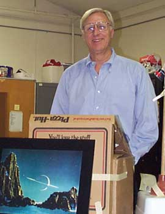
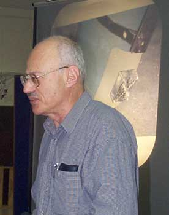
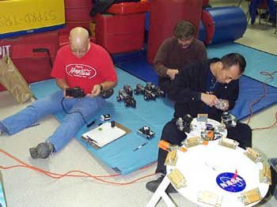

Author Wyn Wachhorst spoke at the October general meeting on his book The Dream of Spaceflight.

Alan Adler spoke at the November general meeting about his experiments in newtonian mirror design and thermal control. Behind him is a photo of his experimental telescope which features a fan mounted on the tube just above the mirror to homogenize the air in the tube and bring it to a consistent temperature. Photo by Morris Jones.

SJAA members Pete Zarubin, Chris Angelos, and Ming Li prepare photo equipment before the November general meeting to capture a possible Leonid meteor shower. Photo by Morris Jones.